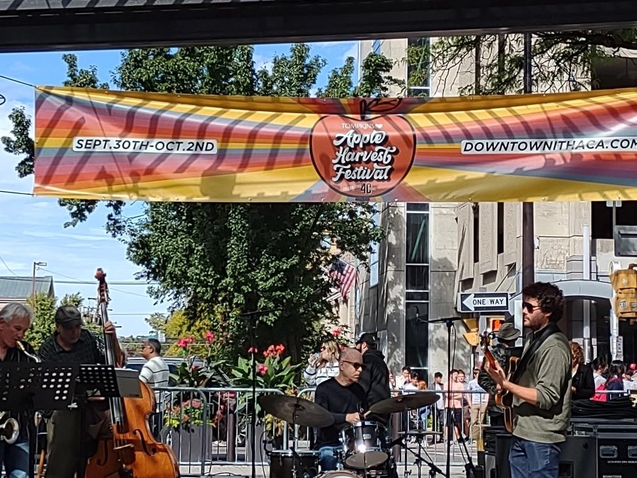
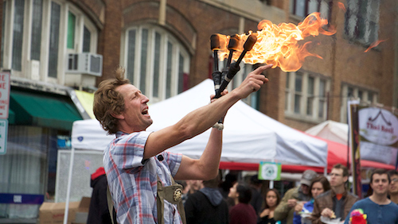
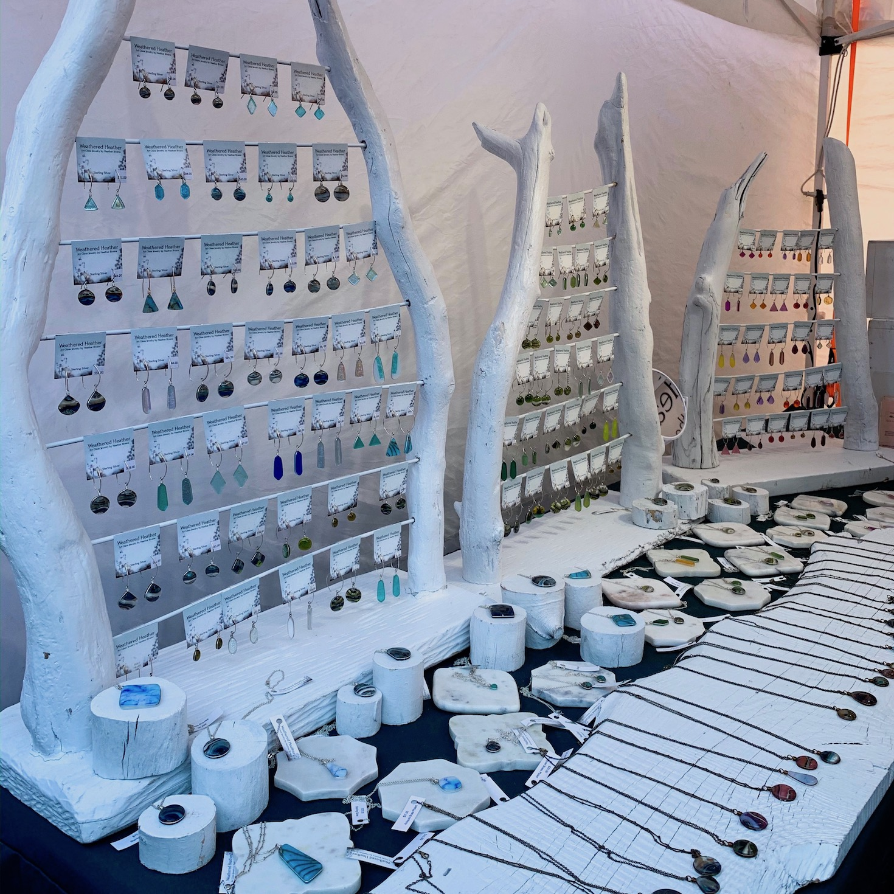
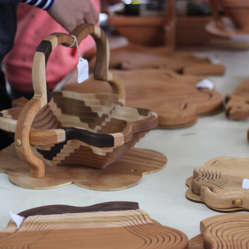
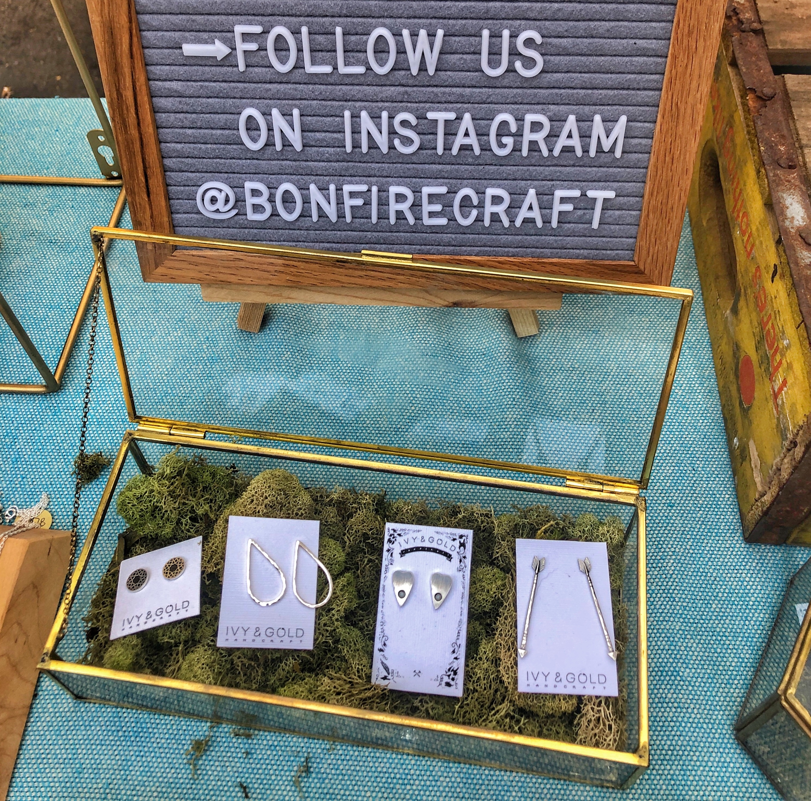
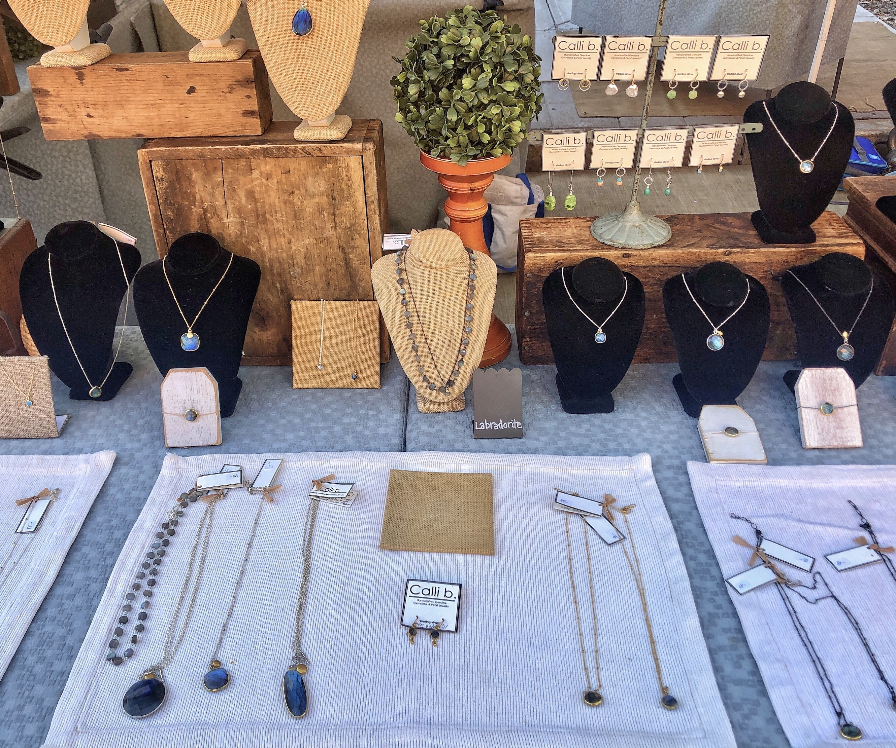

Live Music
Located at the Bernie Milton Pavilion
Saturday, October 1, 2022
- 12:00pm - Rachel Beverly
- 1:00pm - Sunny Weather
- 2:00pm - Firefly Jazz Quartet
- 3:00pm - Janet Batch
- 4:00pm - Leo + The Maydays
- 5:00pm - Neo Project
Sunday, October 2, 2022
- 12:00pm - Ageless Jazz Band
- 1:00pm - Yamatai
- 1:30pm - Fall Creek Brass Band
- 3:00pm - Viva Mayhem
- 4:00pm - Noon Fifteen
- 5:00pm - Ariel Arbisser






Jewelry/Art Vendors
- A&K Creations
- Alchemist's Whim
- Forked Up Art
- Anna Pausch Studios
- Art Of Yen Ospina
- Ashley Messana Jewelry
- Bags That Bite
- Black Rabbit Studio
- Blue Toucan Studios - Fairy Doors
- Bon Fire Craft
- CHOP SHOP STORE
- CM Goodenbury Photography
- Crescent Moon Studio
- Daisy Hollow Farm
- Dale Bowers Art
- Dan Bingham Art
- Dave’s Art Den
- Dear Elaan Jewelry
- DMK Naturals
- dna jewelry designs
- Elizabeth Lassing Jewelry
- FIRST-N-TEN
- For Claudia’s Sayke
- Goldenhandsdesign
- Hooked Productions
- Interstellar Love Craft
- Jake’s Jammin Bow Ties
- Jazz House Designs
- Julie Draws
- Kingsley Street Artisan Soaps
- Knittin Caboodle
- Kom Life
- Lakeland Winery
- Laurel O'Brien Jewelry
- Leather & Lace
- Libby Balm.
- Marika Chew Watercolor Paintings
- May and Mary
- Mayor Potencial
- 501C3
- Metal Magic
- Morning Mist Farms Soaps & Sundries
- MV CERAMICS
- Natalie Rae NY
- Pair'adox Dice
- Pam Gifford Pottery
- Pickled Punks
- Pm Press
- potsbydjr
- Puccoon Raccoon
- Queen City Basement Designs
- Rachel Feirman
- Ragtrader Vintage
- Rose Gottlieb Art & Jewelry
- SamHain's Delights
- Saratoga Peanut Butter Company
- Southwest Expressions
- Spirited Servers
- Suede Sauce Company
- Sunny Days of Ithaca
- Sunshine's Creative Designs
- Tess Zizak Arts
- The Hair Jeweler
- The Pearl & Stone
- Via's Cookies
- Water of Whimsy
- Wildflower Beads
- Youth Entrepreneurship Market
- Your CBD Store
- and more!